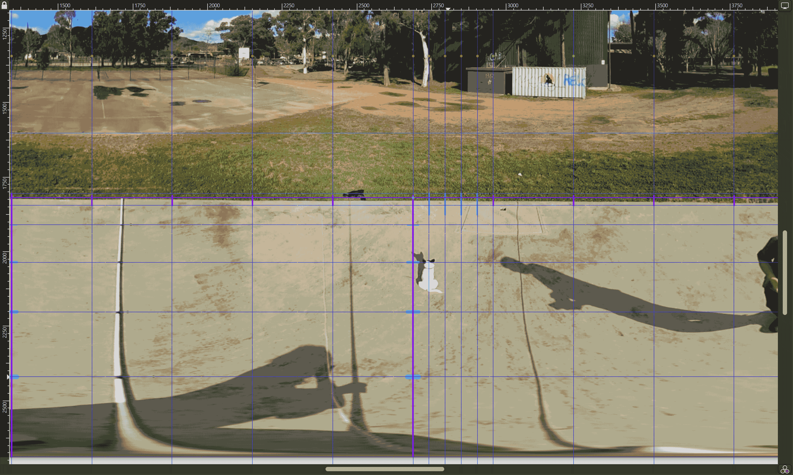

This workflow has been developed to allow easy creation of .kmz files from 360 panospheric images.
These can be taken with a gopro Max camera or most consumer drones like those made by DJI.
Any geocoded equirectangular images (jpegs) can be used, regardless of how they were created, but this workflow is specifically tailored to the gopro Max.
Before using this script we recommend making a backup of the original camera files just in case as this script edits the files directly.
The workflow is as follows:
Rename the files
Get subset of images a specified distance apart
Add overlays to the images
Create a google earth .kml file
Convert the kml file and associated images into a single .kmz file
The resulting .kmz file can then be used in the pannotator package for annotating.
Check & Install Dependent Packages
In order for this workflow to function as expected there are a few dependent packages to install and configure.
Show the code
dependentPackages <-c("tcltk","stringr","tools","exiftoolr","geosphere","stringr","gpx","magick","fs","magrittr","plotKML","zip","usefun" )for (i in dependentPackages) {print(paste0("Checking for: ", i))# First check if you have the package installed check_for_package <-system.file(package = i)print(check_for_package)# If not run the following code to install it.if (check_for_package =="") {print(paste0(i, " package not found .....installing now"))install.packages(i) } else {print(paste0(i, " package is already installed")) }}
Rename Files
By default most consumer cameras like the gopro max & DJI drones don’t allow the user to specify the file names they apply to images that they create.
A typical file name follows the format GS__XXXX.JPG - where XXXX is a counter number of the images taken by the camera.
To address this issue and make it easier to manage the files for processing, this code appends the date_time stamp to the beginning of the files in a given directory. It’s useful for organising files when doing field work, especially when using multiple cameras at the same time.
The output format is: YYYYMMDD_HHMMSS_FileName.ext
Note: Gopro now have custom firmware that allows you to set the file names in the field see this GoPro Labs link.
This code checks the file name length initially assuming that files names directly downloaded from the camera are 12 characters long. If the files used have longer file names they will not be renamed. This ensures they are only renamed once.
Show the code
library(tcltk)library(exiftoolr)library(stringr)library(tools)#This code uses tcltk to throw up a folder browser window for the user to select the directory with the gopro max files to be renameddirectory <- tcltk::tk_choose.dir(default ="gopro_images", caption ="Select directory with files to process")#OR#directory <- "C:/FolderToUse/"#file_extension <- "\\.JPG$"file_extension <-"\\.[Jj][Pp][Gg]$"my_files <-list.files( directory,pattern =paste0("*", file_extension),all.files =FALSE,full.names =TRUE )#read the exif information in the file to get the creation datefiles_df <- exiftoolr::exif_read(my_files, args =c("-G1", "-a", "-s"))#Loop through the files and check to change files names#this checks if the files have already been changed by looking at the length of the file name.for (i in1:nrow(files_df)) {print("Checking if camera file name has not been changed")if (nchar(files_df[i, "System:FileName"]) ==12) {print("File appears to be 12 characters long")print(paste0("SourceFile: ", files_df[i, "SourceFile"])) origFullFileName <-paste0(files_df[i, "SourceFile"]) createDate <-paste0(files_df[i, "ExifIFD:DateTimeOriginal"])print(paste0("CreateDate: ", createDate)) formattedCreateDate <- stringr::str_replace_all(createDate, ":", "") formattedCreateDate <- stringr::str_replace_all(formattedCreateDate, " ", "_")print(paste0("formattedCreateDate: ", formattedCreateDate)) file_ext <-tolower(tools::file_ext(files_df[i, "System:FileName"])) newFileName <-paste0(files_df[i, "System:Directory"], "/", formattedCreateDate,"_",tools::file_path_sans_ext(basename(files_df[i, "System:FileName"])), ".",file_ext)print(paste0("newFileName: ", newFileName))file.rename(from = origFullFileName, to = newFileName)print("File name changed") } else {print("It appears that the files have already been renamed as it's greater than 12 characters long" )print(paste0("SourceFile: ", files_df[i, "SourceFile"])) }}
Function to calculate distances between image geo-locations.
This code looks through all the files in a given folder and copies images a user-specified distance apart into a new folder for use later on. It starts with the first file and looks for a file at least XX metres from that. Once it finds one it adds it to the list then uses it as the location to look for another file at least XX metres from it and so on until it gets to the end of the file list. This method is most suitable for linear transect sampling.
Show the code
library(geosphere)options(digits =20)options(digits.secs =20)options(scipen =9999)#function which takes 2 arguments#1:gpx_locations - a dataframe containing 4 columns("SourceFile", "System:Directory", "Composite:GPSLongitude", "Composite:GPSLatitude")#2:distance in metres between each image to extract. (default=50m)findImagesEveryXmetres <-function(my_gpx_locs, metresToNextImage =50) { gpx_locs <- my_gpx_locs keeps <-c("Composite:GPSLongitude", "Composite:GPSLatitude") points <- gpx_locs[keeps]#View(points)#View(gpx_locs)#calculate the distance between any two points distance_m <- geosphere::distm(points , fun = geosphere::distHaversine)rownames(distance_m) <-basename(gpx_locs[, "SourceFile"])colnames(distance_m) <-basename(gpx_locs[, "SourceFile"])#View(distance_m)#find images a certain distance apart. selected_files <-vector() metres_between_images <- metresToNextImageprint(paste0("Searching for images apart by: ", metres_between_images," metres" ))for (i in1:nrow(distance_m)) {if (i ==1) {#if it is the first frame add it as the current frame selected_files <-append(selected_files, rownames(distance_m)[i]) current_frame <-rownames(distance_m)[i]print(paste0("Frame 1: ", current_frame))print(paste0("looking for frame >", metres_between_images ," Metres from frame 1" )) }#if the current frame is greater than the specified metresif ((distance_m[i, current_frame] > metres_between_images)) { current_frame <-rownames(distance_m)[i]print(paste0("current_frame: ", current_frame)) selected_files <-append(selected_files, current_frame) } }print(paste0("Files found:", selected_files)) new_folder <-paste0(gpx_locs[1, "System:Directory"], "_Frames_", metres_between_images, "m_apart")dir.create(new_folder) source_folder <-dirname(gpx_locs[1, "SourceFile"])print(gpx_locs[1, "System:Directory"])for (q in selected_files) { file_to_copy <-paste0(source_folder, "/", q) destination <-paste0(new_folder, "/", q)file.copy( file_to_copy, destination,overwrite =TRUE,recursive =FALSE,copy.mode =TRUE,copy.date =TRUE ) } }
Call Function Above
Now call the function above to calculate the distance between all the images and copy them to a new folder.
This code goes through the images in the folder created above and adds the overlay file to them. This overlay must be specific to the camera used to create the 360 images as the focal length of the lens etc. will define how the overlay should look.
In this example we used a gopro Max at 3.2m above the ground. The easiest way to determine how an overlay should look is to take some images with the camera at the specified height with the desired overlay marked on the ground so you have an easy template to base your overlay on.
Here we wanted a circular marker at a 5 metre radius and we were lucky to find a round concrete water tank buried in the ground with the required radius. We marked the distance in metres from the centre of the plot directly under the camera using a pole with black marking tape at 1 metre intervals. Below is the image loaded into inkscape so we could draw the required marker lines for the overlay.

overlay image with camera background
Note: There is a slight discrepancy with the line on the right side of the image. This is due to the camera not being exactly vertical when capturing the image.
The overlay was created using inkscape and the exported as a portable network graphics (.png) file with transparency. See the example below:
overlay image with transparency
The code below uses imagemagick to load the underlying base file and then overlays the .png and saves out the flattened file for use in the kml/kmz files in the following steps.
Show the code
library(magick)library(tools)if (!exists("directory")) { directory <- tcltk::tk_choose.dir(default ="", caption ="Select directory with files to process")#OR#directory <- "C:/folder_path_to_gopro_files/"}# if it doesn't exist then add the default metres between imagesif (!exists("metresBetweenEachImageWanted")) { metresBetweenEachImageWanted <-50}# if it doesn't exist then thorw up a dialog to select the overlay file to useif (!exists("overlay_file")) { overlay_file <- tcltk::tk_choose.files(default="./overlay_files/5m_overlay_wedges_straight6.png", caption ="Select the overlay .png to use", multi=FALSE)}new_directory <-paste0(directory,"_Frames_", metresBetweenEachImageWanted,"m_apart")file_extension <-"\\.jpg$"files_lst <-list.files( new_directory,pattern =paste0(file_extension),all.files =FALSE,full.names =TRUE,recursive =FALSE,include.dirs =FALSE )# first create a new directory to add the overlay images todir.create(paste0(new_directory, "/with_overlay/"))for (t in1:length(files_lst)) { background_image <- magick::image_read(files_lst[t]) overlay <- magick::image_read(overlay_file) image_dir <-dirname(files_lst[t]) overlay_image_dir <-paste0(image_dir, "/with_overlay/") new_filename <-paste0(overlay_image_dir,basename(tools::file_path_sans_ext(files_lst[t])),"_with_overlay.jpg")print(paste0("Adding Overlay to create: ", new_filename)) img <-c(background_image, overlay) %>% magick::image_flatten(.) %>% magick::image_write(., new_filename, format ="jpg")}
Generate KML
This code generates a google earth kml file linking to the image files in the folder generated above. It uses ExifTool with a template “kml_hide_rollover.fmt” to create the kml file.
Show the code
if (!exists("directory")) { directory <- tcltk::tk_choose.dir(default ="", caption ="Select directory with files to process")#OR#directory <- "C:/folder_path_to_gopro_files/"}# if it doesn't exist then add the default metres between imagesif (!exists("metresBetweenEachImageWanted")) { metresBetweenEachImageWanted <-50}new_directory <-paste0(directory,"_Frames_", metresBetweenEachImageWanted,"m_apart/with_overlay")output_kml <-paste0(directory,"_Frames_", metresBetweenEachImageWanted,"m_apart_with_overlay.kml")exif_args <-c("-p", "kml_hide_rollover.fmt", "-r")exif_call(args = exif_args,path = new_directory,stdout = output_kml,quiet =FALSE)# now fix the links to the images to make them relative.mystring <- readr::read_file(output_kml)path_only <-paste0(dirname(output_kml))mystring2 <-gsub(path_only, ".", mystring, fixed = T)sink(paste0(output_kml))writeLines(mystring2)sink()
Convert kml & images into a kmz
This code reads the .kml file created above and converts it to a .kmz file. This involves zipping up the images and the .kml file into one file. It also edits the relative links etc. The convenience of the kmz file is that it combines the kml and associated images into one file.
Show the code
library(zip)if (!exists("directory")) { directory <- tcltk::tk_choose.dir(default ="", caption ="Select directory with files to process")#OR#directory <- "C:/folder_path_to_gopro_files/"}if (!exists("metresBetweenEachImageWanted")) { metresBetweenEachImageWanted <-100}new_directory <-paste0(directory,"_Frames_", metresBetweenEachImageWanted,"m_apart/with_overlay")output_kml <-paste0(directory,"_Frames_", metresBetweenEachImageWanted,"m_apart_with_overlay.kml")print("Generating kmz file for:")print(output_kml)kml_file_name <-basename(output_kml)kml_image_directory <- new_directorydir_to_copy <- kml_image_directorytemp_folder <-paste0(usefun::get_parent_dir(directory), "/temp")new_dir_path <-paste0(temp_folder, "/files/")fs::dir_copy(dir_to_copy, new_dir_path, overwrite =TRUE)fs::file_copy(output_kml, temp_folder, overwrite =TRUE)file.rename(from =file.path(temp_folder, kml_file_name),to =file.path(temp_folder, "doc.kml"))#clean up all of the extra line breaks in the kml filemystring <- readr::read_file(file.path(temp_folder, "doc.kml"))mystring2 <-gsub('\r\r\r\r\r\n', '\n', mystring, fixed = T)mystring3 <-gsub('\r\r\r\r\n', '\n', mystring2, fixed = T)mystring4 <-gsub('\r\r\r\n', '\n', mystring3, fixed = T)mystring5 <-gsub('\r\r\n', '\n', mystring4, fixed = T)mystring6 <-gsub('\n\r\n', ' ', mystring5, fixed = T)# Extract the part of the string after the last '/'last_part_dir <-tail(strsplit(new_directory, "/")[[1]], 2)mykml <- stringr::str_replace_all(mystring6[1], paste0("src='./", last_part_dir[1],"/", last_part_dir[2]), "src='files")mykml <- stringr::str_replace_all(mykml[1], "<name>./", "<name>")sink(paste0(file.path(temp_folder, "doc.kml")))writeLines(mykml)sink()# name for new kmz filekmz_file_name <-paste0(usefun::get_parent_dir(directory),"/",basename(tools::file_path_sans_ext(output_kml)),".kmz")# create the kmz filemyWd <- temp_folderfiles_lst <-list.files(path = temp_folder,pattern ="*.jpg|*.kml",all.files =FALSE,full.names =FALSE,recursive =TRUE,ignore.case =FALSE,include.dirs =FALSE )# zip the file upzip::zip( kmz_file_name, files_lst,recurse =TRUE,compression_level =9,include_directories =TRUE,root = myWd,mode ="mirror")# remove the temp folder and its contentsunlink(temp_folder, recursive =TRUE)